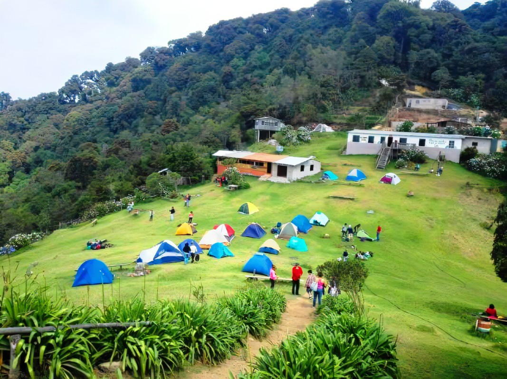
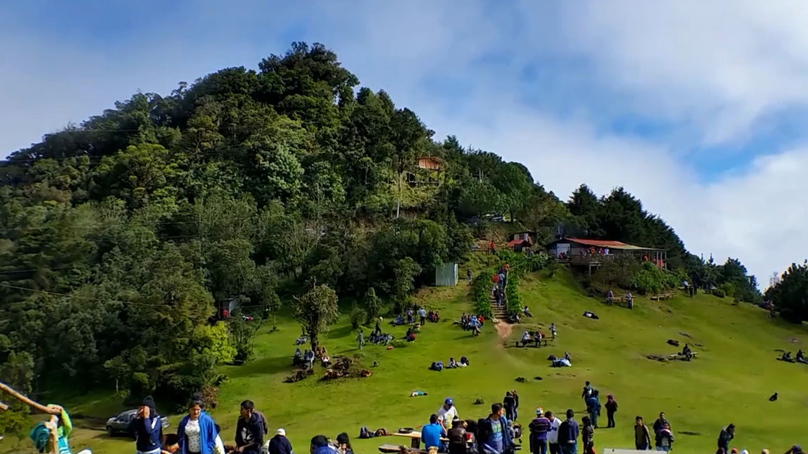

CERRO EL PITAL
El Pital es conocida como la cima más alta y montañosa en El Salvador. Es considerado el cerro más importante en el departamento de Chalatenango, tiene una altura de 2730 metros sobre el nivel del mar. Además de un clima exquisitamente fresco, El Pital cuenta con un bosque húmedo que está conformado por arboles de pino, encino, roble y ciprés. La parte más alta de este cerro se llama Horqueta y tiene un gran atractivo turístico ya que es el lugar donde El Salvador se encuentra con Honduras.
|  |
Cerro El Pital es considerado, por las personas que gustan de un clima frío, uno de los mejores lugares para acampar. La temperatura más baja registrada en El Salvador fue de -20.4°C y fue en este lugar; y por lo general aquí se mantiene a 7°C. La parte más alta para acampar se encuentra a 2700 metros sobre el nivel del mar, esto esta ubicado específicamente entre los dos picos de la montaña formando un corredor de viento. En esta área del Pital la temperatura se encuentra a aproximadamente 10 grados menos que los lugares de sus zonas aledañas.Al cerro llegan muchas personas interesadas en realizar ecoturismo, como por ejemplo: camping, caminatas por diferentes senderos y observar la flora y fauna del lugar. Lo bello de este lugar es que se pueden encontrar bellas plantas casi inexistentes en el país y son únicas en la zona. |
Al cerro llegan muchas personas interesadas en realizar ecoturismo, como por ejemplo: camping, caminatas por diferentes senderos y observar la flora y fauna del lugar. Lo bello de este lugar es que se pueden encontrar bellas plantas casi inexistentes en el país y son únicas en la zona.
|
Al visitar este sitio en Chalatenango, algunas otras de las actividades que podrá hacer, es escalar la Peña Rajada que es un pequeño mirador natural que se encuentra sobre una inmensa roca, desde ahí se puede observar San Ingnacio, La Palma, partes de Guatemala y Honduras, así como también otras áreas del oriente del país. Eso sí, debe saber que es un lugar privado y por lo tanto hay que pagar para ingresar. Los precios del Pital son: $1 para niños y $2 para adultos; cada vehículo pago $2 por ingreso; si desea acampar deberá pagar $4 por la estadía de cada automóvil y $4 por cada persona. |
 |
Si quiere hacer uso y dormir en una de las cabañas del lugar, el precio es de $125 para 12 personas; $120 para 10 personas y $35 para 2 personas.